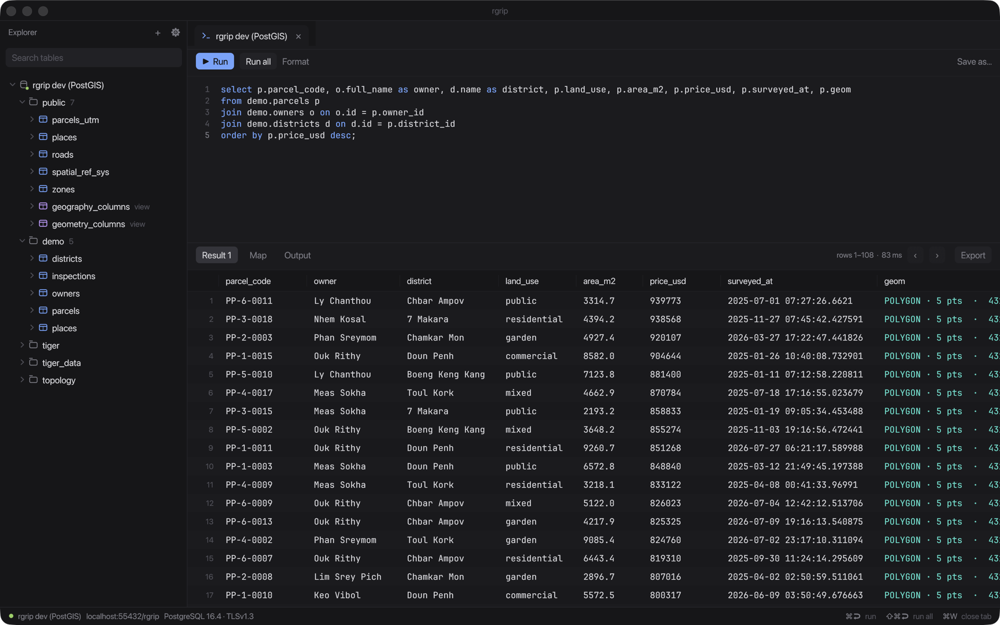
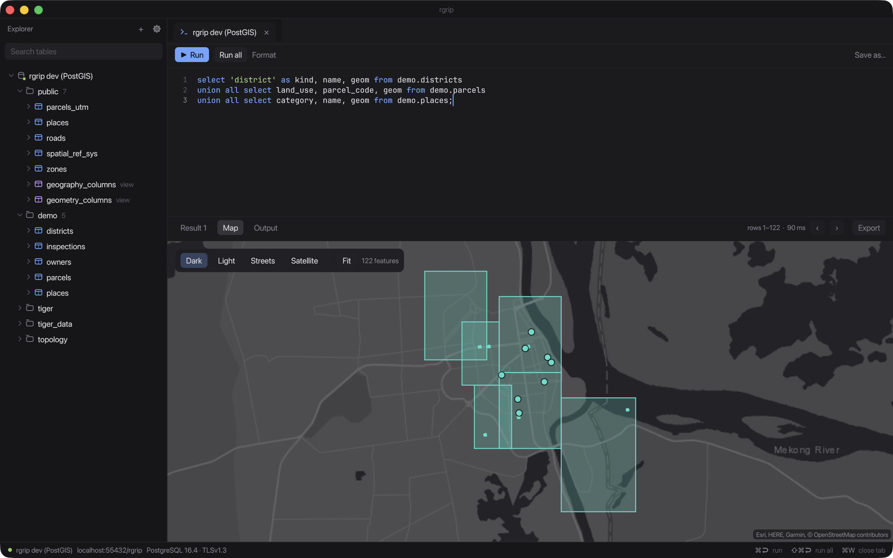
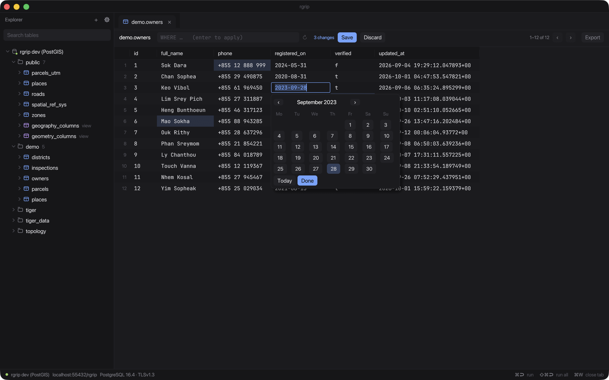
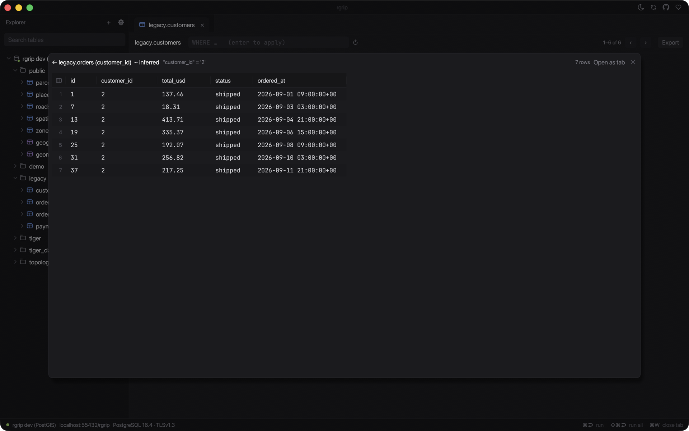
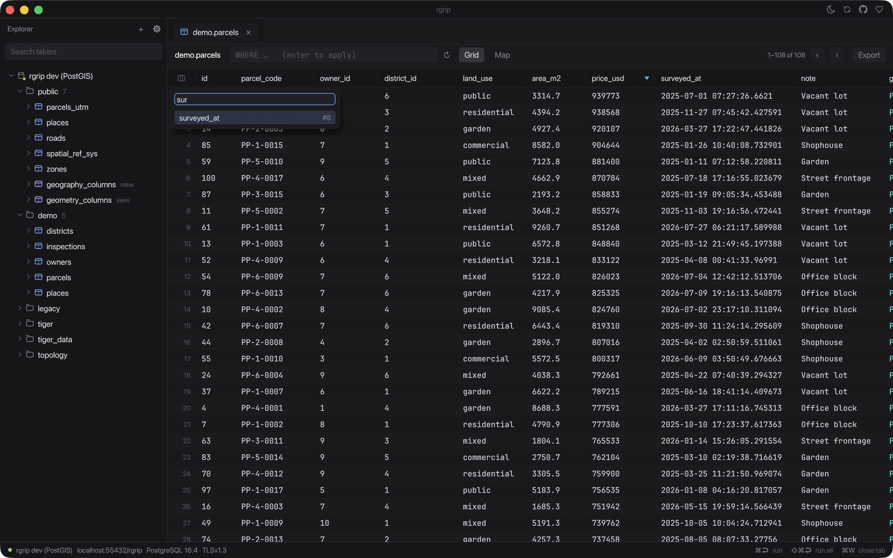
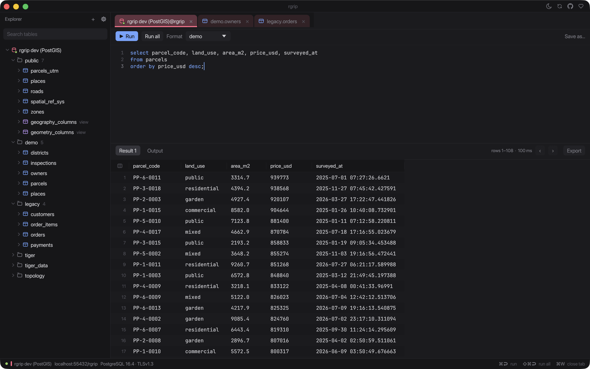
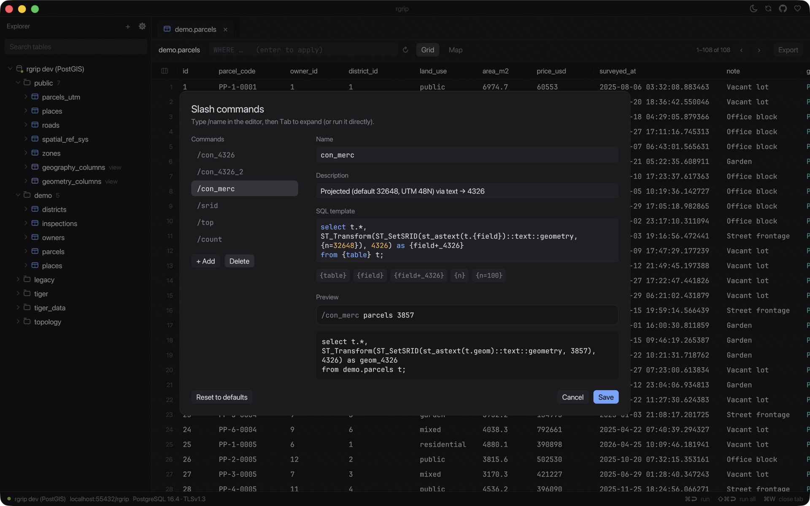
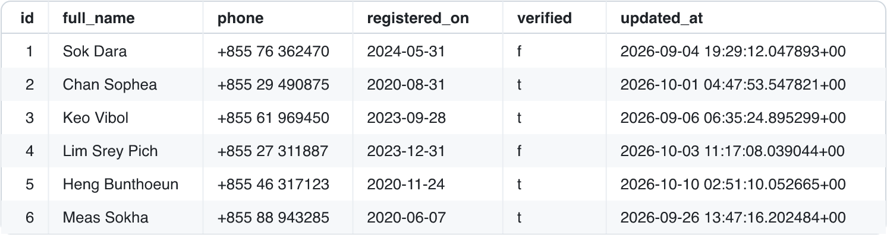

Free and open source
A small Postgres client, with a map.
rgrip is a native PostgreSQL client written in Rust. Run a query and look at your PostGIS data on a map, follow relations between tables, and copy results to share.
macOS · Apple silicon · MIT OR Apache-2.0
- ~9 MBdownload
- ~75 MBmemory at idle
- Nativewritten in Rust

Features
- PostGIS
- Readable geometry cells and a built-in map that reprojects WGS84, Web Mercator and UTM on the fly.
- SQL console
- Highlighting, context-aware autocomplete, a formatter (⇧⌘F), saved queries, and slash commands like
/countthat expand into full queries. - Results grid
- Virtualized with server-side paging, multi-row selection and frozen columns. Export to CSV, JSON, GeoJSON, Markdown, SQL or SVG, or copy rows as an image.
- Inline editing
- Double-click a cell to edit it, with a date/time picker for date and time columns. Changes are saved in one transaction, matched on the primary key.
- Relations
- Follow foreign keys in both directions from any row, in a popup you can chain.
- Connections
- SSL up to
verify-fullwith client certificates, SSH tunnels, and paste-in connection strings.
A closer look
Little workflows that add up.
PostGIS
See your data on a map
Geometry columns become readable cells and one click puts them on a map. Pick a dark, light, streets or satellite basemap. rgrip reprojects WGS84, Web Mercator and UTM on the client and flags features that landed in the wrong hemisphere (hello, swapped lat/lon).

Editing
Edit cells in place
Double-click, pick a date from the calendar, set NULL. Pending changes stay highlighted until you save, and then everything goes out in a single transaction keyed on the primary key. If one row fails, nothing changes.

Relations
Follow relations, even without foreign keys
Right-click a row and jump to the rows it points to, or the rows pointing at it. No constraints? rgrip infers relations from column names and types (customer_id → customers.id) and marks them as inferred. Keep chaining, step Back, or open any hop as a tab.

Grid
Wide tables, tamed
Freeze key columns so they stay put while you scroll, and jump to any column with ⌘J. The grid is virtualized and pages 1,000 rows at a time from the server.

Safety
Know when you're on prod
Give a connection a color and every tab of it is tinted, titled name@database. Each console has its own schema picker, so unqualified names resolve where you expect.

Yours
Your own slash commands
Type /count parcels and press Tab. Edit the built-ins or add your own in Settings: an SQL template with {table}, {field} and {n=100}, with a live preview.

Sharing
Copy as image
Need to show someone a result? One click copies a PNG of the table to your clipboard, ready to paste into Telegram or Slack. There is also Copy for AI agent, which gives you markdown with the query and column types.

Keyboard shortcuts
- ⌘↩
- Run statement
- ⇧⌘↩
- Run all (script)
- ⌘S
- Save query / save edits
- ⇧⌘F
- Format SQL
- ⌘N
- New query
- ⌘W
- Close tab
- ⌘J
- Go to column
- Tab
- Expand slash command
Get rgrip
Grab the Apple silicon zip from GitHub Releases, unzip, and open. Updates arrive in-app.
Build from source
Needs Rust 1.88 or newer.
git clone https://github.com/yoouTaro/rgrip && cd rgrip && cargo run -p rgripBuy me a coffee ☕
rgrip is free and open source. If it saves you time, a coffee helps keep the late-night commits flowing. Sponsorships go through GitHub Sponsors, which passes on 100% to the maintainer.
☕ Buy me a coffeeVibe-coded with ☕ and an AI pair programmer.